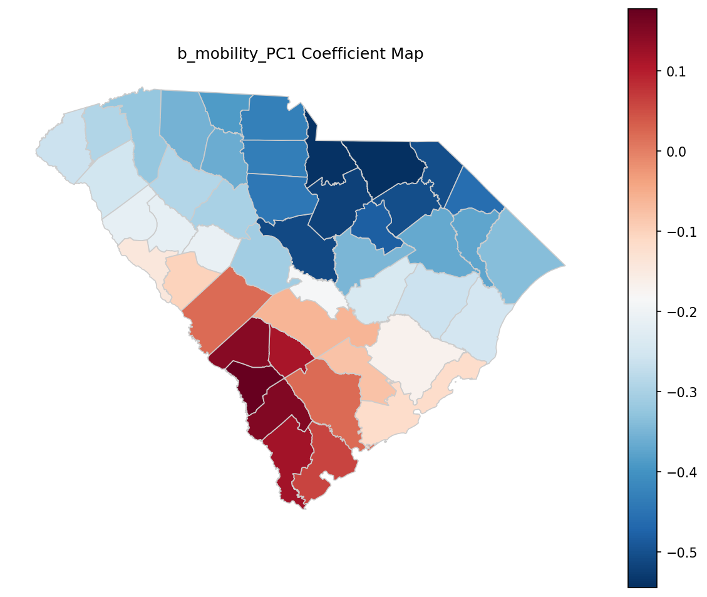
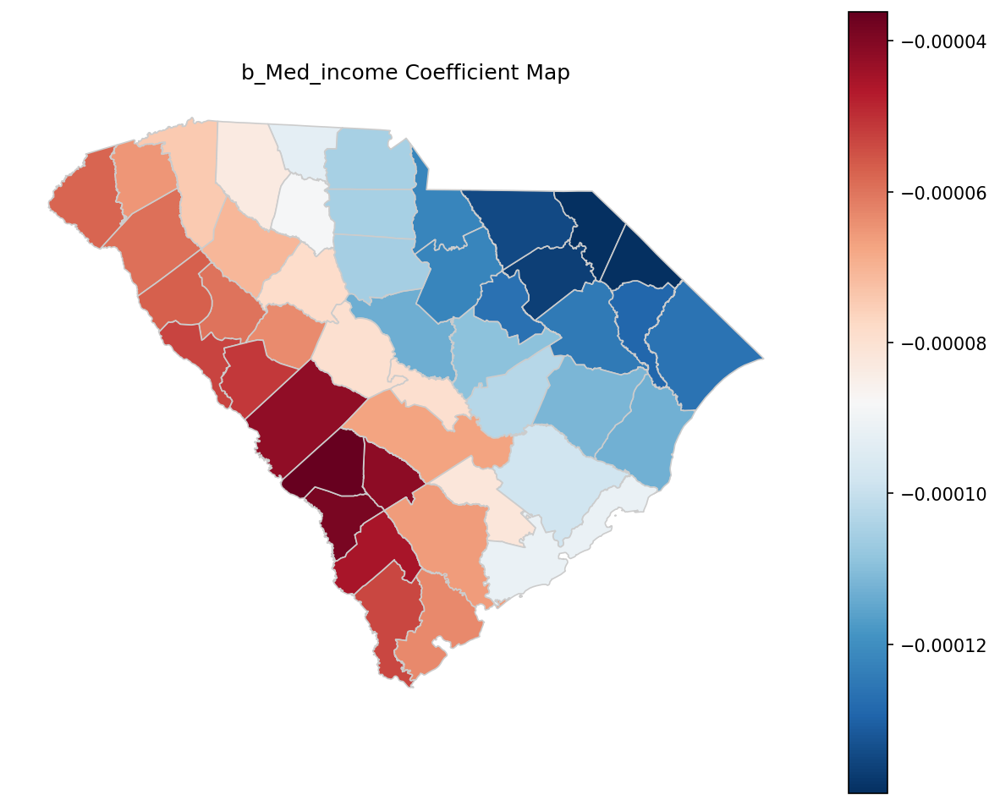
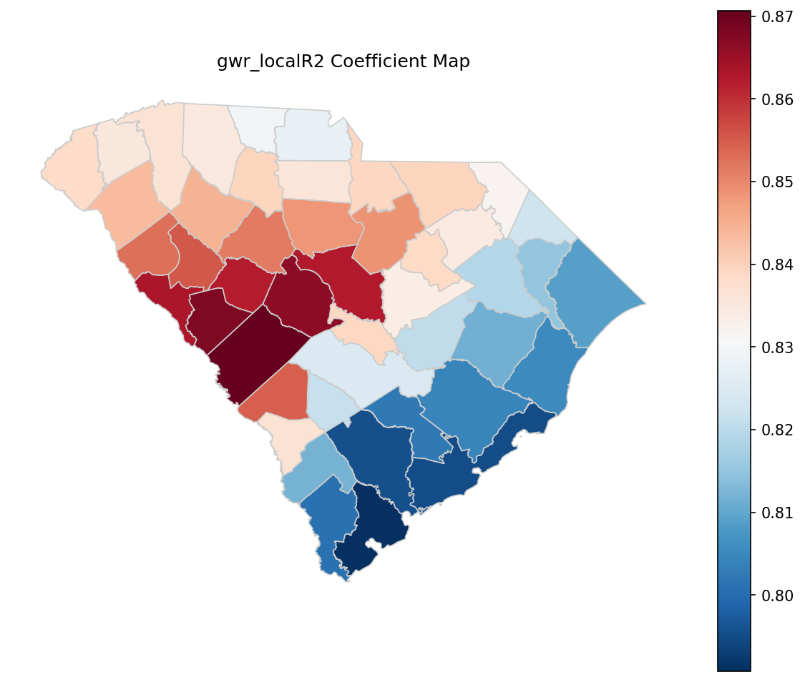
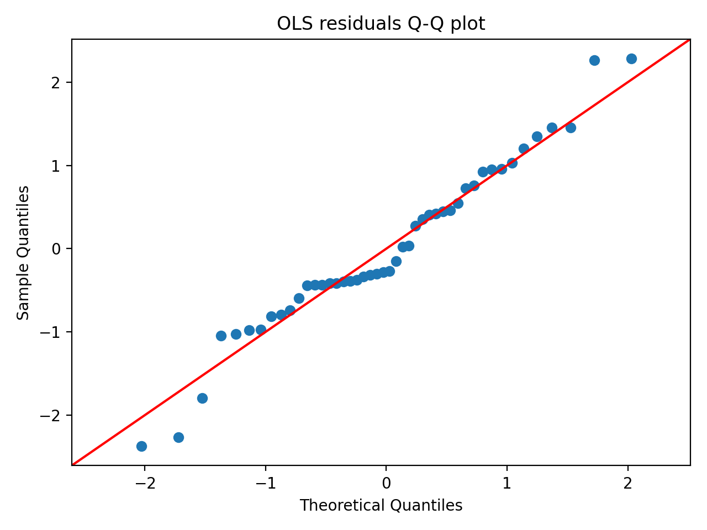

An Autonomous Geospatial Scientific Inquiry (AGSI) framework demonstration.
How do spatial patterns of mobility (place visitation) mediate the relationship between neighborhood socioeconomic status and depression prevalence across the counties of South Carolina?
This case evaluates the framework's methodological reasoning fidelity — its ability to assemble a multi-stage causal-inferential pipeline when none of the constructs named in the research question are directly observable in the data. The system must operationalize latent constructs (socioeconomic status; mobility patterns), compose a formal mediation analysis, and reconcile heterogeneous spatial diagnostics without conflating absence of residual autocorrelation with absence of spatial heterogeneity in slopes.
Identified socioeconomic status as exposure, mobility patterns as a mediator, and depression prevalence as outcome — recognizing that all three must be operationalized from heterogeneous inputs.
Generated a 3-objective plan covering (i) baseline SES–depression association, (ii) SES–mobility composition relationship, and (iii) formal mediation testing with parallel spatial diagnostics.
Constructed a composite SES index from z-scored ACS indicators; derived a 10-category POI visitation share vector, computed Shannon-entropy mobility diversity, and extracted a dominant compositional axis via PCA. Fitted OLS, bootstrap mediation (ACME / ADE / total), residual Moran's I, spatial error model, and GWR with AICc-selected bandwidth.
Result Analysis Agent compiled GWR choropleths, residual diagnostics, and the mediation-effects table; Reporting Agent assembled a measured, hypothesis-aware manuscript that explicitly qualified mixed evidence.




📄 Manuscript (PDF) 📝 Manuscript (Markdown) 📘 Manuscript (DOCX) 📋 Final Research Plan 🧭 Execution Flowchart 🔍 RQ Breakdown (JSON)